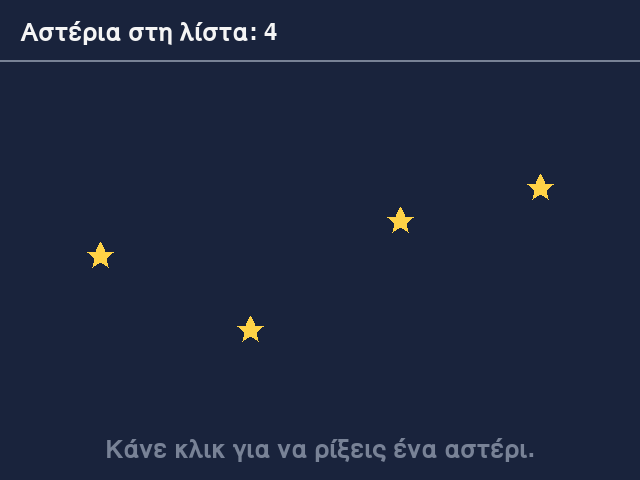
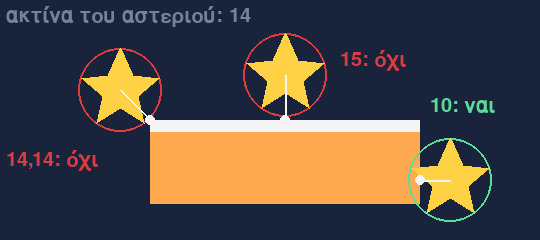
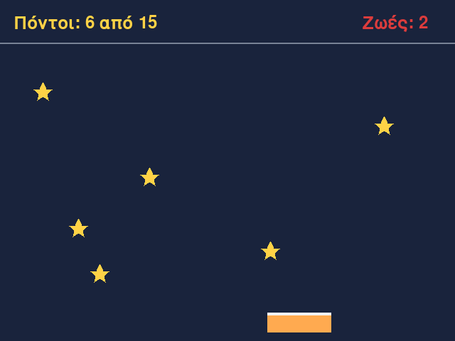
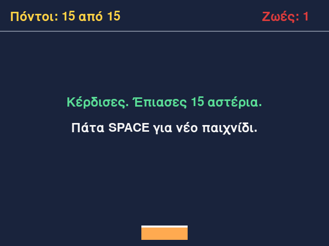
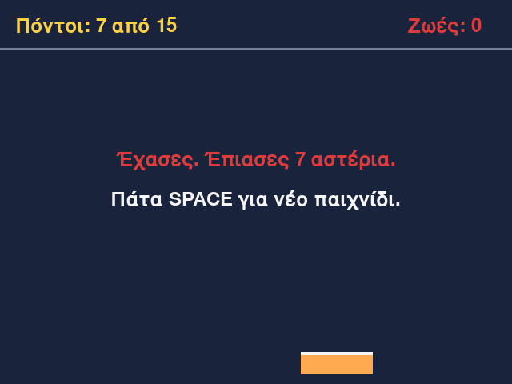

Μάθημα 10: Πιάσε τα αστέρια¶
Παιχνίδι: αστέρια πέφτουν από ψηλά και κινείς ένα καλάθι για να τα πιάσεις· κερδίζεις με 15 αστέρια και χάνεις αν πέσουν έξω 3
Διάρκεια: 4 κύκλοι × (περίπου 45′ εργασία + 15′ διάλειμμα)
Φύλλο εργασίας
Αυτή η σελίδα εξηγεί τις έννοιες. Οι ασκήσεις και οι οδηγίες για κάθε κύκλο βρίσκονται στο Φύλλο εργασίας 10. Δούλεψε με τις δύο σελίδες ανοιχτές.
Αρχεία εργαστηρίου¶
| Αρχείο | Κύκλος |
|---|---|
| 01-falling.py | 1 |
| 02-timer.py | 2 |
| 03-catch.py | 3 |
| 04-final.py | 4 |
| exercises.py | 1–4 (οι ασκήσεις «γράψε εσύ») |
| check_exercises.py | 1–4 (αυτοέλεγχος των ασκήσεων) |
Κατέβασε και τα έξι αρχεία στον ίδιο φάκελο.
Η αποστολή¶
Αστέρια πέφτουν από ψηλά, σε τυχαίες θέσεις και με τυχαία ταχύτητα. Εσύ κινείς ένα καλάθι αριστερά και δεξιά με τα βέλη και προσπαθείς να τα πιάσεις. Κάθε αστέρι που πιάνεις σου δίνει έναν πόντο. Κάθε αστέρι που πέφτει έξω από το παράθυρο σου κοστίζει μία ζωή, και έχεις τρεις. Αν πιάσεις 15 αστέρια κερδίζεις· αν χάσεις και τις τρεις ζωές, χάνεις. Όσο πιάνεις αστέρια, τα επόμενα έρχονται όλο και πιο συχνά.
Στα Μαθήματα 8 και 9 το παιχνίδι είχε λίγα αντικείμενα, και τα ήξερες από την αρχή. Σήμερα ο αριθμός των αντικειμένων αλλάζει συνέχεια: νέα αστέρια δημιουργούνται και τα παλιά χάνονται. Χρειάζονται τέσσερα πράγματα:
- Λίστα αντικειμένων που μεγαλώνει και μικραίνει: με
append, μεfor, και με σωστό τρόπο να βγάζεις στοιχεία. - Χρονιστής: ένα δικό σου συμβάν που φτάνει κάθε λίγα χιλιοστά του δευτερολέπτου (
set_timerκαιUSEREVENT). - Απόσταση: το module
math, ηmath.hypotκαι ο έλεγχος αν ένας κύκλος ακουμπά ένα ορθογώνιο. - Νίκη, ήττα και δυσκολία: μια συνάρτηση που αποφασίζει την κατάσταση, και ένας χρονιστής που ξαναρυθμίζεται.
Σε κάθε κύκλο γράφεις μία δική σου άσκηση με αυτοέλεγχο, και στο τέλος το παιχνίδι μπορεί να τρέξει με τον δικό σου κώδικα.
Στο τέλος θα μπορείς¶
- να κρατάς πολλά αντικείμενα σε μια λίστα, να προσθέτεις νέα με την
appendκαι να τα ενημερώνεις και να τα ζωγραφίζεις μεfor. - να βγάζεις αντικείμενα από μια λίστα με ασφάλεια, φτιάχνοντας νέα λίστα, και να εξηγείς γιατί δεν αλλάζουμε μια λίστα την ώρα που τη διατρέχουμε.
- να στέλνεις δικά σου συμβάντα με την
pygame.time.set_timerκαι τοpygame.USEREVENT, και να τα διαβάζεις στον βρόχο. - να υπολογίζεις απόσταση με τη
math.hypotκαι να ελέγχεις αν ένας κύκλος ακουμπά ένα ορθογώνιο, με το πλησιέστερο σημείο. - να μετράς πόντους και ζωές σε δύο περάσματα της λίστας, και να μη σου πέφτουν οι ζωές κάτω από το 0.
- να αποφασίζεις νίκη, ήττα ή συνέχεια με μια συνάρτηση, και να αλλάζεις τη δυσκολία ξαναρυθμίζοντας τον χρονιστή.
Πριν αρχίσεις¶
- Μέσα στον φάκελο
python-gamesφτιάξε τον φάκελο10-catch-stars. - Κατέβασε εκεί τα έξι αρχεία του πίνακα, με τα ακριβή τους ονόματα.
- Άνοιξε τον φάκελο στο VS Code και άνοιξε τερματικό.
- Έλεγξε ότι η pygame-ce είναι εγκατεστημένη, όπως στο Μάθημα 7:
python -c "import pygame; print(pygame.version.ver)". - Φτιάξε ένα κενό αρχείο
sandbox.pyγια δοκιμές.
Ο κύκλος εργασίας
Πρόβλεψη → εκτέλεση → σύγκριση → εξήγηση. Στα παιχνίδια με λίστες η πρόβλεψη είναι: «τι έχει η λίστα στο τέλος αυτού του καρέ;». Γράψε τη λίστα στο χαρτί, καρέ προς καρέ, πριν τρέξεις τον κώδικα.
Ένα καλάθι, δύο βέλη
Το καλάθι κινείται με τα βέλη αριστερά και δεξιά. Για να λαμβάνει το παράθυρο τα πλήκτρα, πρέπει να έχει την εστίαση: κάνε πρώτα ένα κλικ πάνω του. Το κλικ στο Στάδιο 1 έχει άλλη δουλειά: ρίχνει ένα αστέρι.
Κύκλος 1 — Αστέρια που πέφτουν¶
Σε αυτόν τον κύκλο κάθε κλικ ρίχνει ένα αστέρι από ψηλά. Τα αστέρια πέφτουν, και όσα βγουν από το παράθυρο φεύγουν από τη λίστα.
1.1 Πολλά αντικείμενα που αλλάζουν¶
Στο Μάθημα 9 το παιχνίδι είχε τρία αντικείμενα: left, right και ball. Σήμερα κάθε δευτερόλεπτο εμφανίζεται ένα νέο
αστέρι, και όταν ένα αστέρι πιαστεί ή πέσει έξω, χάνεται. Δεν ξέρουμε πόσα θα είναι μαζί: ίσως δύο, ίσως επτά. Δεν γίνεται να
γράψουμε μεταβλητές star1, star2, star3, … γιατί δεν ξέρουμε πόσες θα χρειαστούμε.
Η λύση είναι μια λίστα αντικειμένων, όπως στο Μάθημα 6: μια μεταβλητή stars που κρατά τα αστέρια που υπάρχουν αυτή
τη στιγμή. Ό,τι χρειαζόμαστε το κάνουμε με πέντε γνωστές εντολές:
| Τι θέλω | Τι γράφω |
|---|---|
| να ξεκινήσω χωρίς αστέρια | stars = [] |
| να προσθέσω ένα νέο αστέρι | stars.append(Star(…)) |
| να κάνω κάτι σε κάθε αστέρι | for star in stars: |
| να βγάλω τα αστέρια που έπεσαν | stars = remove_fallen(stars, limit) |
| να μάθω πόσα αστέρια υπάρχουν | len(stars) |
Η λίστα μεγαλώνει με την append και μικραίνει όταν βγάζουμε στοιχεία. Το δεύτερο θέλει προσοχή (ενότητα 1.6).
1.2 Η κλάση Star¶
Κάθε αστέρι είναι ένα αντικείμενο της κλάσης Star, όπως κάθε ρακέτα του Μαθήματος 9 ήταν αντικείμενο της Paddle:
class Star:
def __init__(self, x, y, speed):
self.x = x
self.y = y
self.radius = STAR_RADIUS
self.speed = speed
def update(self, dt):
self.y += self.speed * dt
| Ιδιότητα | Τι κρατά |
|---|---|
x, y |
η θέση του κέντρου του αστεριού· το y μεγαλώνει καθώς το αστέρι πέφτει |
radius |
η ακτίνα του, 14 pixel (η σταθερά STAR_RADIUS, ίδια για όλα τα αστέρια) |
speed |
η ταχύτητα πτώσης σε pixel το δευτερόλεπτο, διαφορετική για κάθε αστέρι |
| Μέθοδος | Τι κάνει |
|---|---|
update(dt) |
κατεβάζει το αστέρι κατά speed * dt |
- Η ακτίνα δεν είναι παράμετρος της
__init__, γιατί είναι ίδια για όλα τα αστέρια: την παίρνουμε από τη σταθερά. - Η ταχύτητα είναι τυχαίος ακέραιος από
MIN_SPEED = 120έωςMAX_SPEED = 220. Ένα αστέρι διασχίζει το παράθυρο σε περίπου 2 έως 3,5 δευτερόλεπτα. - Η θέση
xδεν αλλάζει ποτέ: τα αστέρια πέφτουν κάθετα. Τοdtείναι ο χρόνος του καρέ, όπως στο Μάθημα 8.
1.3 Ένα νέο αστέρι με κλικ¶
Στον for των συμβάντων, δίπλα στο QUIT, προσθέτουμε το κλικ του ποντικιού:
for event in pygame.event.get():
if event.type == pygame.QUIT:
running = False
elif event.type == pygame.MOUSEBUTTONDOWN:
stars.append(Star(event.pos[0], HUD_HEIGHT + STAR_RADIUS, random.randint(MIN_SPEED, MAX_SPEED)))
Η εντολή του κλικ έχει τέσσερα βήματα, από μέσα προς τα έξω:
- Η
random.randint(MIN_SPEED, MAX_SPEED)διαλέγει μια τυχαία ταχύτητα από 120 έως 220 (και τα δύο άκρα περιλαμβάνονται, όπως στο Μάθημα 1). - Το
event.posείναι η θέση του κλικ, πλειάδα(x, y)(Μάθημα 7). Τοevent.pos[0]είναι το x της. - Η
Star(…)εκτελεί τη μέθοδο__init__και επιστρέφει ένα νέο αντικείμενο. ΤοHUD_HEIGHT + STAR_RADIUS, δηλαδή 74, είναι το αρχικόy: το αστέρι εμφανίζεται ακριβώς κάτω από τη γραμμή του HUD. - Η
stars.append(…)βάζει το νέο αστέρι στο τέλος της λίστας.
Κάθε κλικ φτιάχνει ένα ξεχωριστό αντικείμενο, με δικά του x, y και speed. Το αντικείμενο δεν έχει δικό του όνομα
(star1)· ζει μέσα στη λίστα, και το βρίσκουμε από εκεί.
| Κλικ | x του κλικ | Η λίστα μετά το κλικ |
|---|---|---|
| 1ο | 100 | ένα αστέρι: x = 100 |
| 2ο | 320 | δύο αστέρια: x = 100 και x = 320 |
| 3ο | 540 | τρία αστέρια: x = 100, x = 320 και x = 540 |
1.4 Ο for πάνω σε μια λίστα αντικειμένων¶
- Ο βρόχος παίρνει τα αντικείμενα της λίστας ένα ένα, με τη σειρά που μπήκαν. Σε κάθε επανάληψη το όνομα
starδείχνει το αντικείμενο που είναι η σειρά του. - Το
starδεν είναι αντίγραφο. Είναι ένα δεύτερο όνομα για το ίδιο αντικείμενο (όπως τοb = aτου Μαθήματος 6). Γι' αυτό ηstar.update(dt)αλλάζει το αστέρι που βρίσκεται μέσα στη λίστα. - Αν η λίστα είναι κενή, ο βρόχος δεν εκτελείται ούτε μία φορά και δεν δίνει σφάλμα. Αυτό συμβαίνει στην αρχή του παιχνιδιού.
- Σε κάθε καρέ έχουμε δύο ξεχωριστούς βρόχους πάνω στη λίστα: ένας κινεί τα αστέρια και ένας τα ζωγραφίζει. Όπως στο Μάθημα 8, πρώτα ενημερώνουμε και μετά ζωγραφίζουμε.
1.5 Το αστέρι στην οθόνη¶
Το αστέρι ζωγραφίζεται ως πολύγωνο με την pygame.draw.polygon, που τη γνωρίζεις από το Μάθημα 7. Οι κορυφές του δίνονται
ως μετατοπίσεις από το κέντρο, στην πλειάδα STAR_SHAPE. Έχει δέκα ζεύγη: πέντε αιχμές και πέντε εσωτερικές γωνίες.
def star_points(x, y):
points = []
for dx, dy in STAR_SHAPE:
points.append((x + dx, y + dy))
return points
- Κάθε στοιχείο του
STAR_SHAPEείναι ένα ζεύγος. Ο βρόχος το αποσυσκευάζει (Μάθημα 4): ο πρώτος αριθμός πηγαίνει στοdxκαι ο δεύτερος στοdy. - Το πρώτο ζεύγος,
(0, -14), είναι η πάνω αιχμή: ίδιο x με το κέντρο, 14 pixel ψηλότερα. - Η
star_pointsεπιστρέφει μια λίστα σημείων. Τηνappendτην έμαθες στο Μάθημα 3. - Όλες οι κορυφές απέχουν το πολύ 14 pixel από το κέντρο, δηλαδή το αστέρι χωρά μέσα σε κύκλο με ακτίνα
STAR_RADIUS.
1.6 Τα αστέρια που έπεσαν¶
Ένα αστέρι που βγήκε από το παράθυρο δεν χρειάζεται πια. Αν δεν το βγάλουμε από τη λίστα, η λίστα μεγαλώνει χωρίς τέλος,
και στον Κύκλο 3 θα πρέπει να ξέρουμε ποια αστέρια χάθηκαν. Ένα αστέρι έχει βγει ολόκληρο όταν το κέντρο του είναι κάτω
από το κάτω άκρο του παραθύρου κατά μία ακτίνα: star.y > HEIGHT + STAR_RADIUS, δηλαδή star.y > 494.
Η παγίδα. Το πιο φυσικό που θα δοκίμαζες είναι να βγάλεις το αστέρι με τη remove μέσα στον ίδιο for. Δες τι
συμβαίνει σε μια λίστα με τα y τεσσάρων αστεριών, από τα οποία πρέπει να φύγουν όσα έχουν y > 500:
Η έξοδος είναι [650, 100], ενώ θέλαμε [100]. Το 650 δεν έφυγε. Ο for κρατά από πίσω του μια θέση (0, 1, 2, …) και
σε κάθε επανάληψη διαβάζει το στοιχείο που βρίσκεται σε αυτή τη θέση. Όταν βγαίνει ένα στοιχείο, τα επόμενα μετακινούνται
μία θέση πίσω, και ο βρόχος προχωρά σε μια θέση που τώρα έχει άλλο στοιχείο:
| Επανάληψη | Θέση | Στοιχείο που διαβάζει ο for |
Η λίστα μετά την επανάληψη |
|---|---|---|---|
| 1 | 0 | 600 |
[650, 700, 100] |
| 2 | 1 | 700 |
[650, 100] |
| — | 2 | η λίστα έχει δύο στοιχεία: ο βρόχος τελειώνει | [650, 100] |
Το 650 πήγε στη θέση 0 και ο βρόχος δεν το ξαναείδε. Ο κανόνας είναι: δεν αλλάζουμε το πλήθος μιας λίστας την ώρα που τη
διατρέχουμε με for.
Η λύση. Φτιάχνουμε μια νέα λίστα με όσα στοιχεία κρατάμε, και τη δίνουμε ως αποτέλεσμα:
def remove_fallen(stars, limit):
remaining = []
for star in stars:
if star.y <= limit:
remaining.append(star)
return remaining
Στη θέση του stars βάζουμε το αποτέλεσμα: stars = remove_fallen(stars, HEIGHT + STAR_RADIUS).
- Ο βρόχος διατρέχει την παλιά λίστα, που δεν αλλάζει όσο τη διατρέχει. Η νέα λίστα γεμίζει με όσα αστέρια μένουν.
- Η σειρά των αστεριών δεν αλλάζει, και τα αστέρια είναι τα ίδια αντικείμενα, όχι αντίγραφα.
- Το
<=κρατά και το αστέρι που βρίσκεται ακριβώς στο όριο. - Η αρχική λίστα δεν αλλάζει. Αν γράψεις μόνο
remove_fallen(stars, 494), χωρίςstars =, το αποτέλεσμα χάνεται και κανένα αστέρι δεν φεύγει.
Τη remove_fallen τη γράφεις εσύ στην άσκηση του κύκλου. Δεν χρειάζεται pygame: παίρνει μια λίστα με αντικείμενα που έχουν
ιδιότητα y, και έναν αριθμό.
1.7 Πόσα αστέρια υπάρχουν;¶
Η συνάρτηση len(stars) δίνει το πλήθος των στοιχείων της λίστας, δηλαδή πόσα αστέρια υπάρχουν αυτή τη στιγμή. Στο
Στάδιο 1 το δείχνουμε στο HUD: f"Αστέρια στη λίστα: {len(stars)}". Αυξάνεται με κάθε κλικ και μειώνεται όταν ένα αστέρι
φεύγει από το παράθυρο.
1.8 Συνηθισμένα λάθη¶
| Τι βλέπεις | Πιθανή αιτία |
|---|---|
| Δεν εμφανίζεται κανένα αστέρι | η Star(…) δημιουργείται αλλά δεν μπαίνει στη λίστα (λείπει η stars.append), ή δεν ζωγραφίζονται τα στοιχεία της λίστας |
| Τα αστέρια ανεβαίνουν αντί να πέφτουν | -= αντί για += στην update (το y μεγαλώνει προς τα κάτω) |
| Η ένδειξη «Αστέρια στη λίστα» μεγαλώνει χωρίς τέλος | δεν καλείται η remove_fallen, ή καλείται χωρίς stars = και το αποτέλεσμά της χάνεται |
TypeError: Star.__init__() missing 1 required positional argument: 'speed' |
λιγότερα ορίσματα από όσες παραμέτρους έχει η __init__ |
TypeError: 'NoneType' object is not iterable |
η remove_fallen δεν επιστρέφει τη λίστα (λείπει το return, ή είναι μέσα στον for) |
AttributeError: 'Star' object has no attribute 'speed' |
η ιδιότητα δεν δημιουργείται στην __init__, ή έχει άλλο όνομα |
| Ένα αστέρι «προσπερνιέται» και μένει στη λίστα | αφαίρεση με remove μέσα στον for (ενότητα 1.6) |
Στάδιο 1 — Αστέρια που πέφτουν¶
Άνοιξε το 01-falling.py. Συμπλήρωσε τα επτά κενά και τρέξε το. Κάθε κλικ ρίχνει ένα αστέρι στην οριζόντια θέση του κλικ,
κάτω από την γκρι γραμμή. Τα αστέρια πέφτουν με διαφορετικές ταχύτητες, και η ένδειξη στο πάνω μέρος δείχνει πόσα υπάρχουν.

"""Στάδιο 1 — Αστέρια που πέφτουν: μια λίστα αντικειμένων, με κλικ ένα νέο αστέρι.
Συμπλήρωσε τα επτά κενά (____). Κάθε κλικ φτιάχνει ένα νέο αστέρι και το βάζει στη λίστα. Σε κάθε καρέ όλα τα αστέρια
πέφτουν, και όσα βγουν από το παράθυρο φεύγουν από τη λίστα.
"""
import random
import pygame
pygame.init()
WIDTH = 640
HEIGHT = 480
HUD_HEIGHT = 60
STAR_RADIUS = 14
MIN_SPEED = 120 # η ταχύτητα κάθε αστεριού είναι τυχαία, σε pixel το δευτερόλεπτο
MAX_SPEED = 220
MAX_DT = 0.05
BACKGROUND = (25, 35, 60)
GREY = (120, 130, 150)
WHITE = (245, 245, 245)
YELLOW = (255, 210, 70)
# Οι κορυφές του αστεριού, ως μετατοπίσεις από το κέντρο του
STAR_SHAPE = ((0, -14), (4, -5), (13, -4), (6, 2), (8, 11), (0, 6), (-8, 11), (-6, 2), (-13, -4), (-4, -5))
screen = pygame.display.set_mode((WIDTH, HEIGHT))
pygame.display.set_caption("Πιάσε τα αστέρια")
font = pygame.font.Font(None, 36)
clock = pygame.time.Clock()
def remove_fallen(stars, limit):
"""Επιστρέφει νέα λίστα με τα αστέρια που δεν έχουν περάσει το όριο limit (δηλαδή με y <= limit)."""
remaining = []
for star in stars:
# TODO 1: το αστέρι μένει στη λίστα όσο δεν έχει περάσει το όριο
if star.y ____ limit:
remaining.append(star)
return remaining
class Star:
"""Ένα αστέρι που πέφτει: θέση του κέντρου, ακτίνα και ταχύτητα (σε pixel το δευτερόλεπτο)."""
def __init__(self, x, y, speed):
self.x = x
self.y = y
self.radius = STAR_RADIUS
self.speed = speed
def update(self, dt):
"""Το αστέρι πέφτει."""
self.y += self.speed * dt
def star_points(x, y):
"""Οι κορυφές του αστεριού με κέντρο το (x, y)."""
points = []
# TODO 2: η λίστα με τις μετατοπίσεις των κορυφών του αστεριού
for dx, dy in ____:
# TODO 3: η μέθοδος της λίστας που προσθέτει στοιχείο στο τέλος
points.____((x + dx, y + dy))
return points
def draw_text(surface, font, text, color, position):
"""Ζωγραφίζει το κείμενο, με την πάνω αριστερή γωνία του στο position."""
image = font.render(text, True, color)
surface.blit(image, position)
def draw_centered_text(surface, font, text, color, center):
"""Ζωγραφίζει το κείμενο, με το κέντρο του στο center."""
image = font.render(text, True, color)
surface.blit(image, image.get_rect(center=center))
def draw_star(surface, star):
"""Ζωγραφίζει το αστέρι."""
pygame.draw.polygon(surface, YELLOW, star_points(star.x, star.y))
# TODO 4: η λίστα των αστεριών ξεκινά κενή
stars = ____
running = True
while running:
dt = min(clock.tick(60) / 1000, MAX_DT)
for event in pygame.event.get():
if event.type == pygame.QUIT:
running = False
elif event.type == pygame.MOUSEBUTTONDOWN:
# TODO 5: ένα νέο αστέρι μπαίνει στο τέλος της λίστας
stars.____(Star(event.pos[0], HUD_HEIGHT + STAR_RADIUS, random.randint(MIN_SPEED, MAX_SPEED)))
for star in stars:
# TODO 6: η μέθοδος του αστεριού που το κάνει να πέσει
star.____(dt)
# TODO 7: η συνάρτηση που επιστρέφει τα αστέρια που δεν έχουν βγει από το παράθυρο
stars = ____(stars, HEIGHT + STAR_RADIUS)
screen.fill(BACKGROUND)
pygame.draw.line(screen, GREY, (0, HUD_HEIGHT), (WIDTH, HUD_HEIGHT), 2)
draw_text(screen, font, f"Αστέρια στη λίστα: {len(stars)}", WHITE, (20, 20))
draw_centered_text(screen, font, "Κάνε κλικ για να ρίξεις ένα αστέρι.", GREY, (WIDTH // 2, HEIGHT - 30))
for star in stars:
draw_star(screen, star)
pygame.display.flip()
pygame.quit()
Συνέχισε στο Φύλλο εργασίας, Κύκλος 1.
Κύκλος 2 — Ο χρονιστής¶
Τα κλικ δεν είναι ο σωστός τρόπος να φτιάχνονται τα αστέρια: το παιχνίδι πρέπει να τα ρίχνει μόνο του. Σε αυτόν τον κύκλο ζητάμε από την pygame να μας στέλνει ένα συμβάν κάθε δευτερόλεπτο.
2.1 Ένα αστέρι κάθε δευτερόλεπτο¶
Θα μπορούσες να μετράς τον χρόνο μόνος σου: μια μεταβλητή timer που αυξάνεται κατά dt σε κάθε καρέ, και όταν φτάσει το 1
δημιουργείς αστέρι και τη μηδενίζεις. Δουλεύει, αλλά κάθε διαφορετικός χρόνος του παιχνιδιού θέλει τη δική του μεταβλητή και
τον δικό του έλεγχο.
Η pygame δίνει έναν πιο καθαρό τρόπο, που ταιριάζει με όσα έμαθες για τον προγραμματισμό βάσει συμβάντων (Μάθημα 9):
ένας χρονιστής (timer) στέλνει στην ουρά των συμβάντων ένα συμβάν κάθε λίγα χιλιοστά του δευτερολέπτου. Ο βρόχος το
διαβάζει όπως διαβάζει το QUIT ή το πάτημα ενός πλήκτρου.
2.2 Δικά σου συμβάντα: USEREVENT¶
Κάθε συμβάν έχει ένα type, που είναι ένας αριθμός. Τα pygame.QUIT, pygame.KEYDOWN και pygame.MOUSEBUTTONDOWN είναι
ονόματα για τέτοιους αριθμούς, και γι' αυτό γράφουμε event.type == pygame.QUIT. Δοκίμασε στο sandbox.py:
Η pygame κρατά τους αριθμούς από το pygame.USEREVENT και πάνω για δικά σου συμβάντα, ώστε να μην μπερδεύονται με τα
δικά της. Για το συμβάν μας γράφουμε:
- Το
SPAWN_STARείναι σταθερά (με κεφαλαία, Μάθημα 8) και κρατά τον αριθμό του συμβάντος μας. - Το
+ 1δεν είναι υποχρεωτικό. Το βάζουμε για να έχει κάθε δικό μας συμβάν διαφορετικό αριθμό: ένα δεύτερο συμβάν θα ήταν τοpygame.USEREVENT + 2. Θα το χρειαστείς στις προκλήσεις. - Ο αριθμός δεν έχει σημασία. Σημασία έχει ότι είναι δικός μας και ότι το όνομα λέει τι σημαίνει: «δημιούργησε αστέρι».
2.3 Ο χρονιστής: pygame.time.set_timer¶
- Η
pygame.time.set_timerείναι συνάρτηση του modulepygame.time(τοpygame.time.Clockείναι κλάση του ίδιου module). - Το πρώτο όρισμα είναι το συμβάν που θα σταλεί. Το δεύτερο είναι το διάστημα σε χιλιοστά του δευτερολέπτου (ms), όχι σε δευτερόλεπτα: το 1000 σημαίνει ένα δευτερόλεπτο.
- Από τη στιγμή της κλήσης, η pygame βάζει στην ουρά ένα συμβάν
SPAWN_STARκάθε 1000 ms, χωρίς να κάνουμε τίποτε άλλο. Το πρώτο έρχεται μετά το πρώτο διάστημα, όχι αμέσως. - Την καλούμε μία φορά, πριν από τον βρόχο. Κάθε νέα κλήση ξαναρχίζει το μέτρημα από την αρχή.
- Η
set_timer(SPAWN_STAR, 0)σταματά τον χρονιστή. Μια κλήση με άλλο διάστημα αντικαθιστά το παλιό. - Κάθε συμβάν έχει έναν χρονιστή. Αν θέλεις δεύτερο χρονιστή, χρειάζεσαι δεύτερο συμβάν· αλλιώς η δεύτερη κλήση αντικαθιστά την πρώτη.
| Κλήση | Ένα συμβάν κάθε… | Συμβάντα σε 10 δευτερόλεπτα |
|---|---|---|
set_timer(SPAWN_STAR, 1000) |
1 δευτερόλεπτο | 10 |
set_timer(SPAWN_STAR, 500) |
μισό δευτερόλεπτο | 20 |
set_timer(SPAWN_STAR, 250) |
ένα τέταρτο του δευτερολέπτου | 40 |
set_timer(SPAWN_STAR, 2000) |
2 δευτερόλεπτα | 5 |
set_timer(SPAWN_STAR, 0) |
κανένα: ο χρονιστής σταματά | 0 |
2.4 Το συμβάν στον βρόχο¶
Το συμβάν του χρονιστή φτάνει από την ίδια pygame.event.get() με όλα τα άλλα. Στον for των συμβάντων προσθέτουμε ένα
ακόμη elif:
for event in pygame.event.get():
if event.type == pygame.QUIT:
running = False
elif event.type == SPAWN_STAR:
x = random.randint(STAR_RADIUS, WIDTH - STAR_RADIUS)
stars.append(Star(x, HUD_HEIGHT + STAR_RADIUS, random.randint(MIN_SPEED, MAX_SPEED)))
created += 1
- Αυτή τη φορά το x είναι τυχαίο: από
STAR_RADIUS(14) έωςWIDTH - STAR_RADIUS(626), ώστε ολόκληρο το αστέρι να βρίσκεται μέσα στο παράθυρο. - Το υπόλοιπο είναι ίδιο με το Στάδιο 1. Άλλαξε μόνο ο λόγος που φτιάχνεται το αστέρι: δεν το ζητά πια ο παίκτης, το ζητά ο χρονιστής.
- Η
created += 1μετρά τα αστέρια που δημιουργήθηκαν (ενότητα 2.6).
2.5 Περισσότερα από ένα συμβάντα στο ίδιο καρέ¶
Αν το πρόγραμμα καθυστερήσει (αργός υπολογιστής, ή σέρνεις το παράθυρο), μπορεί να περιμένουν στην ουρά δύο ή περισσότερα
συμβάντα του χρονιστή. Η pygame.event.get() τα επιστρέφει όλα μαζί, και ο for τα επεξεργάζεται ένα ένα: δύο συμβάντα στο
ίδιο καρέ δίνουν δύο αστέρια στο ίδιο καρέ. Γι' αυτό τα συμβάντα διαβάζονται με for: ένας απλός έλεγχος if θα
έβλεπε μόνο ένα.
2.6 Δημιουργήθηκαν και υπάρχουν¶
Στο Στάδιο 2 το HUD δείχνει δύο αριθμούς που δεν είναι το ίδιο πράγμα:
created |
len(stars) |
|
|---|---|---|
| Τι μετρά | πόσα αστέρια δημιουργήθηκαν από την αρχή | πόσα αστέρια υπάρχουν τώρα |
| Πότε αλλάζει | αυξάνεται κατά 1 σε κάθε συμβάν του χρονιστή, και δεν μειώνεται ποτέ | αυξάνεται με την append και μειώνεται όταν ένα αστέρι φεύγει |
Με ένα αστέρι το δευτερόλεπτο, που χρειάζεται 2 έως 3,5 δευτερόλεπτα για να πέσει, το len(stars) είναι συνήθως 2 ή 3 και
δεν ξεπερνά το 4, ενώ το created μεγαλώνει συνέχεια.
2.7 Το διάστημα εξαρτάται από τους πόντους¶
Στον Κύκλο 4 τα αστέρια θα έρχονται πιο συχνά όσο πιάνεις περισσότερα. Το διάστημα του χρονιστή θα υπολογίζεται από τους
πόντους με τη συνάρτηση spawn_interval(score), που τη γράφεις εσύ σε αυτόν τον κύκλο:
Διάβασέ την από μέσα προς τα έξω:
- Η
score // 3είναι η ακέραια διαίρεση: πόσες ολόκληρες τριάδες πόντων έχεις (η7 // 3είναι 2). - Η
150 * (score // 3)είναι η μείωση: 150 ms για κάθε ολόκληρη τριάδα. - Η
1000 - …ξεκινά από ένα δευτερόλεπτο και αφαιρεί τη μείωση. - Η
max(400, …)δεν αφήνει το διάστημα να πέσει κάτω από 400 ms. Είναι το μισό από το γνωστό πρότυποmax(…, min(…)): εδώ χρειαζόμαστε όριο μόνο από κάτω.
score |
score // 3 |
1000 - 150 * (score // 3) |
spawn_interval(score) |
|---|---|---|---|
| 0 | 0 | 1000 | 1000 |
| 2 | 0 | 1000 | 1000 |
| 3 | 1 | 850 | 850 |
| 8 | 2 | 700 | 700 |
| 12 | 4 | 400 | 400 |
| 15 | 5 | 250 | 400 |
| 30 | 10 | -500 | 400 |
Ο πίνακας δείχνει γιατί χρειάζεται η max: χωρίς αυτήν, από τους 15 πόντους και πάνω το διάστημα θα γινόταν μικρότερο από
400, και από τους 21 θα έβγαινε αρνητικό.
2.8 Συνηθισμένα λάθη¶
| Τι βλέπεις | Πιθανή αιτία |
|---|---|
| Δεν εμφανίζεται ποτέ αστέρι | η set_timer μπήκε μέσα στον βρόχο: ξαναρχίζει σε κάθε καρέ και δεν προλαβαίνει να στείλει συμβάν |
Δεν εμφανίζεται ποτέ αστέρι (και η set_timer είναι πριν από τον βρόχο) |
ο έλεγχος είναι event.type == pygame.USEREVENT, ενώ ο χρονιστής στέλνει το USEREVENT + 1 |
| Τα αστέρια πέφτουν σαν βροχή, δεκάδες το δευτερόλεπτο | χιλιοστά αντί για δευτερόλεπτα: set_timer(SPAWN_STAR, 1) |
| Το πρώτο αστέρι αργεί ένα δευτερόλεπτο | σωστό: το πρώτο συμβάν έρχεται μετά το πρώτο διάστημα |
TypeError: function missing required argument 'millis' (pos 2) |
η set_timer θέλει δύο ορίσματα: το συμβάν και τα χιλιοστά |
TypeError: Random.randint() missing 1 required positional argument: 'b' |
η randint θέλει δύο όρια |
Στάδιο 2 — Ο χρονιστής¶
Άνοιξε το 02-timer.py. Συμπλήρωσε τα έξι κενά και τρέξε το. Δεν χρειάζονται κλικ: ένα νέο αστέρι εμφανίζεται κάθε
δευτερόλεπτο, σε τυχαίο x. Η πρώτη ένδειξη δείχνει πόσα αστέρια υπάρχουν τώρα και η δεύτερη πόσα δημιουργήθηκαν
συνολικά.
"""Στάδιο 2 — Ο χρονιστής: ένα νέο αστέρι κάθε δευτερόλεπτο, χωρίς κλικ.
Συμπλήρωσε τα έξι κενά (____). Η set_timer στέλνει το δικό σου συμβάν SPAWN_STAR κάθε SPAWN_INTERVAL χιλιοστά του
δευτερολέπτου, και ο βρόχος φτιάχνει ένα αστέρι κάθε φορά που το λαμβάνει.
"""
import random
import pygame
pygame.init()
WIDTH = 640
HEIGHT = 480
HUD_HEIGHT = 60
STAR_RADIUS = 14
MIN_SPEED = 120 # η ταχύτητα κάθε αστεριού είναι τυχαία, σε pixel το δευτερόλεπτο
MAX_SPEED = 220
SPAWN_INTERVAL = 1000 # χιλιοστά του δευτερολέπτου ανάμεσα σε δύο αστέρια
MAX_DT = 0.05
# TODO 1: ο πρώτος αριθμός συμβάντος που είναι δικός σου
SPAWN_STAR = pygame.____ + 1 # το συμβάν που στέλνει ο χρονιστής
BACKGROUND = (25, 35, 60)
WHITE = (245, 245, 245)
GREY = (120, 130, 150)
YELLOW = (255, 210, 70)
# Οι κορυφές του αστεριού, ως μετατοπίσεις από το κέντρο του
STAR_SHAPE = ((0, -14), (4, -5), (13, -4), (6, 2), (8, 11), (0, 6), (-8, 11), (-6, 2), (-13, -4), (-4, -5))
screen = pygame.display.set_mode((WIDTH, HEIGHT))
pygame.display.set_caption("Πιάσε τα αστέρια")
font = pygame.font.Font(None, 36)
clock = pygame.time.Clock()
def remove_fallen(stars, limit):
"""Επιστρέφει νέα λίστα με τα αστέρια που δεν έχουν περάσει το όριο limit (δηλαδή με y <= limit)."""
remaining = []
for star in stars:
if star.y <= limit:
remaining.append(star)
return remaining
class Star:
"""Ένα αστέρι που πέφτει: θέση του κέντρου, ακτίνα και ταχύτητα (σε pixel το δευτερόλεπτο)."""
def __init__(self, x, y, speed):
self.x = x
self.y = y
self.radius = STAR_RADIUS
self.speed = speed
def update(self, dt):
"""Το αστέρι πέφτει."""
self.y += self.speed * dt
def star_points(x, y):
"""Οι κορυφές του αστεριού με κέντρο το (x, y)."""
points = []
for dx, dy in STAR_SHAPE:
points.append((x + dx, y + dy))
return points
def draw_text(surface, font, text, color, position):
"""Ζωγραφίζει το κείμενο, με την πάνω αριστερή γωνία του στο position."""
image = font.render(text, True, color)
surface.blit(image, position)
def draw_star(surface, star):
"""Ζωγραφίζει το αστέρι."""
pygame.draw.polygon(surface, YELLOW, star_points(star.x, star.y))
stars = []
created = 0
# TODO 2: η συνάρτηση που ξεκινά τον χρονιστή: συμβάν και χιλιοστά του δευτερολέπτου
pygame.time.____(SPAWN_STAR, SPAWN_INTERVAL)
running = True
while running:
dt = min(clock.tick(60) / 1000, MAX_DT)
for event in pygame.event.get():
if event.type == pygame.QUIT:
running = False
# TODO 3: το συμβάν του χρονιστή
elif event.type == ____:
# TODO 4: τυχαίος ακέραιος, με τα δύο άκρα
x = random.____(STAR_RADIUS, WIDTH - STAR_RADIUS)
stars.append(Star(x, HUD_HEIGHT + STAR_RADIUS, random.randint(MIN_SPEED, MAX_SPEED)))
# TODO 5: ο μετρητής αυξάνεται κατά 1
created ____ 1
for star in stars:
star.update(dt)
stars = remove_fallen(stars, HEIGHT + STAR_RADIUS)
screen.fill(BACKGROUND)
pygame.draw.line(screen, GREY, (0, HUD_HEIGHT), (WIDTH, HUD_HEIGHT), 2)
# TODO 6: το πλήθος των στοιχείων της λίστας
draw_text(screen, font, f"Στη λίστα: {____(stars)}", WHITE, (20, 20))
draw_text(screen, font, f"Δημιουργήθηκαν: {created}", GREY, (WIDTH - 300, 20))
for star in stars:
draw_star(screen, star)
pygame.display.flip()
pygame.quit()
Συνέχισε στο Φύλλο εργασίας, Κύκλος 2.
Κύκλος 3 — Καλάθι και απόσταση¶
Τα αστέρια πέφτουν χωρίς να τα πιάνει κανείς. Σε αυτόν τον κύκλο προσθέτουμε το καλάθι, και μαθαίνουμε πώς βρίσκουμε αν ένας κύκλος (το αστέρι) ακουμπά ένα ορθογώνιο (το καλάθι).
3.1 Το καλάθι¶
Το καλάθι είναι η κλάση Basket. Μοιάζει με την Paddle του Μαθήματος 9, γυρισμένη οριζόντια:
class Basket:
def __init__(self, x, y, width, height, speed):
self.x = x
self.y = y
self.width = width
self.height = height
self.speed = speed
def move(self, direction, dt):
self.x += direction * self.speed * dt
self.x = max(0, min(self.x, WIDTH - self.width))
def box(self):
return (round(self.x), self.y, self.width, self.height)
| Ιδιότητα | Τι κρατά |
|---|---|
x, y |
η θέση της πάνω αριστερής γωνίας· το x είναι δεκαδικός αριθμός, το y δεν αλλάζει |
width, height |
το μέγεθος του καλαθιού: 90 × 28 pixel |
speed |
η ταχύτητα, σε pixel το δευτερόλεπτο |
| Μέθοδος | Τι κάνει |
|---|---|
move(direction, dt) |
μετακινεί το καλάθι κατά direction * speed * dt και το κρατά μέσα στο παράθυρο |
box() |
επιστρέφει την πλειάδα (x, y, πλάτος, ύψος), με το x στρογγυλοποιημένο |
- Η
moveκρατά τοxανάμεσα στο0και στοWIDTH - self.width(550), με το πρότυποmax(…, min(…))που ξέρεις. - Η
moveπαίρνει κατεύθυνση, όχι πλήκτρα:-1αριστερά,0ακίνητο,1δεξιά. Την κατεύθυνση τη δίνει ηkey_direction, που είναι η συνάρτηση του Μαθήματος 9 με άλλα ονόματα (το καλάθι κινείται οριζόντια):
def key_direction(left_pressed, right_pressed):
if left_pressed and not right_pressed:
return -1
if right_pressed and not left_pressed:
return 1
return 0
- Το καλάθι ξεκινά στη μέση:
Basket((WIDTH - BASKET_WIDTH) / 2, BASKET_Y, BASKET_WIDTH, BASKET_HEIGHT, BASKET_SPEED), δηλαδή μεx = 275.0. ΤοBASKET_Yείναι 440: η πάνω πλευρά του καλαθιού είναι στο 440, η κάτω στο 468, 12 pixel πάνω από το κάτω άκρο. - Σε κάθε καρέ διαβάζουμε τα βέλη με την
get_pressed(Μάθημα 9) και κινούμε το καλάθι:
keys = pygame.key.get_pressed()
basket.move(key_direction(keys[pygame.K_LEFT], keys[pygame.K_RIGHT]), dt)
3.2 Η απόσταση ανάμεσα σε δύο σημεία¶
Η απόσταση ανάμεσα στα σημεία (x1, y1) και (x2, y2) προκύπτει από το Πυθαγόρειο θεώρημα. Οι διαφορές των
συντεταγμένων, dx = x2 - x1 και dy = y2 - y1, είναι οι δύο κάθετες πλευρές ενός ορθογώνιου τριγώνου, και η απόσταση είναι η
υποτείνουσά του: √(dx² + dy²). Για τα σημεία (0, 0) και (3, 4) είναι dx = 3, dy = 4, και η απόσταση √(9 + 16) = 5.
Η Python έχει έτοιμο τον υπολογισμό στο module math. Το φορτώνεις στην αρχή του προγράμματος, όπως το random:
Δύο συναρτήσεις του math μας ενδιαφέρουν. Η math.sqrt(x) δίνει την τετραγωνική ρίζα. Η math.hypot(a, b) δίνει
κατευθείαν την υποτείνουσα √(a² + b²). Με αυτήν η απόσταση γράφεται σε μία γραμμή:
| Κλήση | Αποτέλεσμα |
|---|---|
distance(0, 0, 3, 4) |
5.0 |
distance(3, 4, 0, 0) |
5.0 |
distance(1, 1, 1, 1) |
0.0 |
distance(10, 2, 4, -6) |
10.0 |
distance(0, 0, 1, 1) |
1.4142135623730951 |
- Η
math.hypotείναι συνάρτηση του modulemath: γράφουμεmath.μπροστά της, όπως στηrandom.randint. - Το αποτέλεσμα είναι πάντα δεκαδικός αριθμός (
float), ακόμη κι όταν είναι ολόκληρος:5.0. - Η σειρά των δύο σημείων δεν παίζει ρόλο, ούτε τα πρόσημα των διαφορών, γιατί τα τετράγωνα είναι θετικά.
Δώσε στη hypot τις διαφορές, όχι τις συντεταγμένες
Η math.hypot(x2 - x1, y2 - y1) παίρνει δύο αριθμούς: τις διαφορές. Αν γράψεις math.hypot(x1, y1, x2, y2), η
Python δεν διαμαρτύρεται: υπολογίζει το μήκος ενός διανύσματος με τέσσερις διαστάσεις και δίνει λάθος απάντηση. Για
παράδειγμα η distance(1, 1, 1, 1) θα έδινε 2.0 αντί για 0.0.
3.3 Ο κύκλος και το ορθογώνιο¶
Στο Μάθημα 9 αντικαταστήσαμε την μπάλα με το τετράγωνο που την περικλείει και χρησιμοποιήσαμε την colliderect. Εδώ το
αστέρι είναι (σχεδόν) κύκλος με ακτίνα 14 και το καλάθι ορθογώνιο. Ένα τετράγωνο γύρω από το αστέρι θα έλεγε «ακουμπά» και
στη γωνία του καλαθιού, όπου ο κύκλος δεν φτάνει. Θα το κάνουμε σωστά, με απόσταση.
Η ιδέα. Βρίσκουμε το σημείο του ορθογωνίου που είναι πλησιέστερο στο κέντρο του κύκλου. Ο κύκλος ακουμπά το ορθογώνιο ακριβώς όταν η απόσταση του κέντρου από αυτό το σημείο δεν είναι μεγαλύτερη από την ακτίνα.
Το πλησιέστερο σημείο. Το βρίσκουμε ξεχωριστά για κάθε άξονα: κρατάμε τη συντεταγμένη του κέντρου μέσα στο εύρος του
ορθογωνίου, με το γνωστό πρότυπο max(κάτω, min(τιμή, πάνω)):
Αν το cx είναι αριστερά από το ορθογώνιο, το nearest_x γίνεται left. Αν είναι δεξιά, γίνεται left + width. Αν είναι
ανάμεσα, μένει cx. Το ίδιο ισχύει για το y. Τα εννέα σημεία του επιπέδου, ως προς το ορθογώνιο, είναι:
το cx αριστερά από το ορθογώνιο |
το cx ανάμεσα στις δύο πλευρές |
το cx δεξιά από το ορθογώνιο |
|
|---|---|---|---|
το cy πάνω από το ορθογώνιο |
γωνία πάνω αριστερά | (cx, top) |
γωνία πάνω δεξιά |
το cy ανάμεσα στις δύο πλευρές |
(left, cy) |
(cx, cy): μέσα, απόσταση 0 |
(left + width, cy) |
το cy κάτω από το ορθογώνιο |
γωνία κάτω αριστερά | (cx, top + height) |
γωνία κάτω δεξιά |

Μετά απλώς συγκρίνουμε:
def circle_touches_rect(cx, cy, radius, left, top, width, height):
nearest_x = max(left, min(cx, left + width))
nearest_y = max(top, min(cy, top + height))
return distance(cx, cy, nearest_x, nearest_y) <= radius
Για το καλάθι (left, top, width, height) = (200, 440, 90, 28) και αστέρι με ακτίνα 14:
Κέντρο του αστεριού (cx, cy) |
Πλησιέστερο σημείο | Απόσταση | Ακουμπά; |
|---|---|---|---|
(245, 430) |
(245, 440) |
10.0 |
True |
(245, 426) |
(245, 440) |
14.0 |
True |
(245, 425) |
(245, 440) |
15.0 |
False |
(190, 450) |
(200, 450) |
10.0 |
True |
(190, 430) |
(200, 440) |
14.14 |
False |
(245, 454) |
(245, 454) |
0.0 |
True |
- Στη δεύτερη γραμμή η απόσταση είναι ακριβώς 14, και το αστέρι ακουμπά: γι' αυτό η σύγκριση είναι
<=και όχι<. - Στην πέμπτη γραμμή το αστέρι είναι πάνω αριστερά από τη γωνία. Το πλησιέστερο σημείο είναι η ίδια η γωνία
(200, 440), και η απόσταση 14,14 είναι μεγαλύτερη από 14. Το τετράγωνο του Μαθήματος 9 γύρω από αυτό το αστέρι (176–204και416–444) επικαλύπτεται με το καλάθι κατά 4 × 4 pixel, και θα έλεγε «ακουμπά». - Στην τελευταία γραμμή το κέντρο είναι μέσα στο καλάθι: το πλησιέστερο σημείο είναι το ίδιο το κέντρο, και η απόσταση 0.
Τη circle_touches_rect τη γράφεις εσύ στην άσκηση του κύκλου, μαζί με την distance. Δεν χρειάζεται pygame: παίρνει
επτά αριθμούς και επιστρέφει True ή False.
3.4 Το αστέρι ρωτά το καλάθι¶
Στην κλάση Star προσθέτουμε μια μέθοδο, που ρωτά αν το αστέρι ακουμπά ένα καλάθι:
def touches(self, basket):
left, top, width, height = basket.box()
return circle_touches_rect(self.x, self.y, self.radius, left, top, width, height)
- Το
basket.box()επιστρέφει πλειάδα τεσσάρων αριθμών. Η εντολήleft, top, width, height = …την αποσυσκευάζει σε τέσσερα ονόματα (Μάθημα 4). - Παίρνουμε το ορθογώνιο από την
box, και όχι απευθείας από τοbasket.x, ώστε ο έλεγχος να χρησιμοποιεί το ίδιο στρογγυλοποιημένοxπου ζωγραφίζεται. Αυτό που βλέπεις στην οθόνη είναι αυτό που μετρά. - Η κλάση
Starδεν ξέρει πώς υπολογίζεται η επαφή. Το ξέρει ηcircle_touches_rect, που δουλεύει μόνο με αριθμούς.
3.5 Δύο περάσματα σε κάθε καρέ¶
Σε κάθε καρέ, μετά την κίνηση των αστεριών, κοιτάζουμε πρώτα ποια πιάστηκαν και μετά ποια έπεσαν έξω:
# Πρώτο πέρασμα: τα αστέρια που πιάστηκαν
remaining = []
for star in stars:
if star.touches(basket):
score += 1
else:
remaining.append(star)
stars = remaining
# Δεύτερο πέρασμα: τα αστέρια που έπεσαν έξω από το παράθυρο
survivors = remove_fallen(stars, HEIGHT + STAR_RADIUS)
lives = max(0, lives - (len(stars) - len(survivors)))
stars = survivors
- Το πρώτο πέρασμα είναι το ίδιο σχήμα με τη
remove_fallen: νέα λίστα με όσα μένουν. Κάθε αστέρι που ακουμπά το καλάθι δεν μπαίνει στη νέα λίστα και φέρνει έναν πόντο. - Το δεύτερο πέρασμα χρησιμοποιεί τη
remove_fallen. Η διαφοράlen(stars) - len(survivors)είναι πόσα αστέρια βγήκαν από το παράθυρο, δηλαδή πόσες ζωές χάθηκαν. - Η
max(0, …)εμποδίζει τις ζωές να γίνουν αρνητικές. Αν μένει μία ζωή και δύο αστέρια πέσουν στο ίδιο καρέ, το1 - 2είναι -1, και ηmaxτο κάνει 0. - Κάθε πέρασμα κάνει μία δουλειά. Πρώτα βγαίνουν τα αστέρια που πιάστηκαν, μετά ελέγχουμε ποια χάθηκαν.
Ένα παράδειγμα. Το καλάθι είναι στο (200, 440, 90, 28), οι πόντοι είναι 5, οι ζωές 3, και μετά την κίνηση τα αστέρια είναι
το A στο (245, 430), το B στο (100, 300) και το C στο (150, 500):
| Βήμα | Τι γίνεται | Πόντοι | Ζωές | Αστέρια στη λίστα |
|---|---|---|---|---|
| αρχικά | μετά την κίνηση | 5 | 3 | A, B, C |
| πρώτο πέρασμα | το A ακουμπά το καλάθι· τα B και C όχι | 6 | 3 | B, C |
| δεύτερο πέρασμα | το C έχει y = 500 > 494: έπεσε έξω |
6 | 2 | B |
3.6 Πόντοι και ζωές στην οθόνη¶
Στην πάνω αριστερή γωνία φαίνονται οι πόντοι και στην πάνω δεξιά οι ζωές, με την draw_text του Μαθήματος 7:
draw_text(screen, font, f"Πόντοι: {score}", YELLOW, (20, 20))
draw_text(screen, font, f"Ζωές: {lives}", RED, (WIDTH - 130, 20))
Στο Στάδιο 3 το παιχνίδι δεν έχει τέλος: οι ζωές μένουν στο 0 και οι πόντοι αυξάνονται όσο παίζεις. Το τέλος έρχεται στον επόμενο κύκλο.
3.7 Συνηθισμένα λάθη¶
| Τι βλέπεις | Πιθανή αιτία |
|---|---|
NameError: name 'math' is not defined |
λείπει το import math |
Η distance(1, 1, 1, 1) δίνει 2.0 |
math.hypot(x1, y1, x2, y2) αντί για math.hypot(x2 - x1, y2 - y1) |
TypeError: circle_touches_rect() missing 1 required positional argument: 'height' |
λιγότερα ορίσματα από όσες παραμέτρους έχει η συνάρτηση |
| Τα αστέρια περνούν μέσα από το καλάθι | το πλησιέστερο σημείο υπολογίζεται λάθος (π.χ. cx στη θέση του cy), ή συγκρίνεις την απόσταση με λάθος μέγεθος |
| Το αστέρι «ακουμπά» χωρίς να φαίνεται | μεγάλη τιμή στο STAR_RADIUS: η ακτίνα του ελέγχου δεν φαίνεται στην οθόνη, μόνο το σχήμα του αστεριού |
| Οι ζωές γίνονται αρνητικές | λείπει η max(0, …) |
| Οι πόντοι αυξάνονται πολλές φορές για το ίδιο αστέρι | το αστέρι που πιάστηκε μένει στη λίστα: στη νέα λίστα πρέπει να μπαίνουν μόνο όσα δεν πιάστηκαν |
3.8 Δοκιμές¶
| Ενέργεια | Τι αναμένουμε |
|---|---|
| ξεκινάς το παιχνίδι | το καλάθι είναι στη μέση, «Πόντοι: 0», «Ζωές: 3» |
| κρατάς το αριστερό ή το δεξί βέλος | το καλάθι κινείται και σταματά στις δύο άκρες του παραθύρου |
| κρατάς και τα δύο βέλη | το καλάθι μένει ακίνητο |
| ένα αστέρι πέφτει πάνω στο καλάθι | το αστέρι χάνεται και οι πόντοι αυξάνονται κατά 1 |
| ένα αστέρι περνά δίπλα από το καλάθι | πέφτει έξω από το παράθυρο και οι ζωές μειώνονται κατά 1 |
| έχουν χαθεί 3 αστέρια | οι ζωές είναι 0 και δεν γίνονται αρνητικές· το παιχνίδι συνεχίζεται |
| X | το παράθυρο κλείνει |
Στάδιο 3 — Το καλάθι πιάνει αστέρια¶
Άνοιξε το 03-catch.py. Συμπλήρωσε τα οκτώ κενά και παίξε ένα λεπτό. Η key_direction, η Basket και το Star.touches
υπάρχουν έτοιμα· εσύ βάζεις την απόσταση, το πλησιέστερο σημείο και τα δύο περάσματα. Το Στάδιο 3 δεν έχει τέλος.
"""Στάδιο 3 — Το καλάθι πιάνει τα αστέρια: απόσταση με το math, πόντοι και ζωές.
Συμπλήρωσε τα οκτώ κενά (____). Το καλάθι κινείται με τα βέλη. Ένα αστέρι που ακουμπά το καλάθι δίνει έναν πόντο, και ένα
αστέρι που πέφτει έξω από το παράθυρο κοστίζει μία ζωή.
"""
# TODO 1: το module με τα μαθηματικά
import ____
import random
import pygame
pygame.init()
WIDTH = 640
HEIGHT = 480
HUD_HEIGHT = 60
STAR_RADIUS = 14
MIN_SPEED = 120 # η ταχύτητα κάθε αστεριού είναι τυχαία, σε pixel το δευτερόλεπτο
MAX_SPEED = 220
BASKET_WIDTH = 90
BASKET_HEIGHT = 28
BASKET_SPEED = 420 # pixel το δευτερόλεπτο
BASKET_Y = HEIGHT - BASKET_HEIGHT - 12
START_LIVES = 3
SPAWN_INTERVAL = 1000 # χιλιοστά του δευτερολέπτου ανάμεσα σε δύο αστέρια
MAX_DT = 0.05
SPAWN_STAR = pygame.USEREVENT + 1 # το συμβάν που στέλνει ο χρονιστής
BACKGROUND = (25, 35, 60)
WHITE = (245, 245, 245)
GREY = (120, 130, 150)
YELLOW = (255, 210, 70)
RED = (220, 60, 60)
ORANGE = (255, 170, 80)
# Οι κορυφές του αστεριού, ως μετατοπίσεις από το κέντρο του
STAR_SHAPE = ((0, -14), (4, -5), (13, -4), (6, 2), (8, 11), (0, 6), (-8, 11), (-6, 2), (-13, -4), (-4, -5))
screen = pygame.display.set_mode((WIDTH, HEIGHT))
pygame.display.set_caption("Πιάσε τα αστέρια")
font = pygame.font.Font(None, 36)
clock = pygame.time.Clock()
def key_direction(left_pressed, right_pressed):
"""-1 αν πατιέται μόνο το αριστερό πλήκτρο, 1 αν πατιέται μόνο το δεξί, και 0 σε κάθε άλλη περίπτωση."""
if left_pressed and not right_pressed:
return -1
if right_pressed and not left_pressed:
return 1
return 0
def remove_fallen(stars, limit):
"""Επιστρέφει νέα λίστα με τα αστέρια που δεν έχουν περάσει το όριο limit (δηλαδή με y <= limit)."""
remaining = []
for star in stars:
if star.y <= limit:
remaining.append(star)
return remaining
def distance(x1, y1, x2, y2):
"""Η απόσταση ανάμεσα στα σημεία (x1, y1) και (x2, y2)."""
# TODO 2: η υποτείνουσα: η απόσταση από τις διαφορές των συντεταγμένων
return math.____(x2 - x1, y2 - y1)
def circle_touches_rect(cx, cy, radius, left, top, width, height):
"""True αν ο κύκλος με κέντρο (cx, cy) και ακτίνα radius ακουμπά το ορθογώνιο (left, top, width, height)."""
# TODO 3: το cx δεν ξεπερνά τη δεξιά πλευρά του ορθογωνίου
nearest_x = max(left, ____(cx, left + width))
nearest_y = max(top, min(cy, top + height))
# TODO 4: ακουμπά όταν η απόσταση δεν είναι μεγαλύτερη από την ακτίνα
return distance(cx, cy, nearest_x, nearest_y) ____ radius
class Star:
"""Ένα αστέρι που πέφτει: θέση του κέντρου, ακτίνα και ταχύτητα (σε pixel το δευτερόλεπτο)."""
def __init__(self, x, y, speed):
self.x = x
self.y = y
self.radius = STAR_RADIUS
self.speed = speed
def update(self, dt):
"""Το αστέρι πέφτει."""
self.y += self.speed * dt
def touches(self, basket):
"""True αν το αστέρι ακουμπά το καλάθι."""
left, top, width, height = basket.box()
return circle_touches_rect(self.x, self.y, self.radius, left, top, width, height)
class Basket:
"""Το καλάθι: θέση της πάνω αριστερής γωνίας, μέγεθος και ταχύτητα (σε pixel το δευτερόλεπτο)."""
def __init__(self, x, y, width, height, speed):
self.x = x
self.y = y
self.width = width
self.height = height
self.speed = speed
def move(self, direction, dt):
"""Μετακινεί το καλάθι (direction: -1 αριστερά, 0 ακίνητο, 1 δεξιά) και το κρατά μέσα στο παράθυρο."""
self.x += direction * self.speed * dt
self.x = max(0, min(self.x, WIDTH - self.width))
def box(self):
"""Το ορθογώνιο του καλαθιού ως (x, y, πλάτος, ύψος), με το x στρογγυλοποιημένο."""
return (round(self.x), self.y, self.width, self.height)
def star_points(x, y):
"""Οι κορυφές του αστεριού με κέντρο το (x, y)."""
points = []
for dx, dy in STAR_SHAPE:
points.append((x + dx, y + dy))
return points
def draw_text(surface, font, text, color, position):
"""Ζωγραφίζει το κείμενο, με την πάνω αριστερή γωνία του στο position."""
image = font.render(text, True, color)
surface.blit(image, position)
def draw_star(surface, star):
"""Ζωγραφίζει το αστέρι."""
pygame.draw.polygon(surface, YELLOW, star_points(star.x, star.y))
def draw_basket(surface, basket):
"""Ζωγραφίζει το καλάθι, με μια άσπρη λωρίδα στο πάνω μέρος του."""
left, top, width, height = basket.box()
pygame.draw.rect(surface, ORANGE, (left, top, width, height))
pygame.draw.rect(surface, WHITE, (left, top, width, 4))
basket = Basket((WIDTH - BASKET_WIDTH) / 2, BASKET_Y, BASKET_WIDTH, BASKET_HEIGHT, BASKET_SPEED)
stars = []
score = 0
lives = START_LIVES
pygame.time.set_timer(SPAWN_STAR, SPAWN_INTERVAL)
running = True
while running:
dt = min(clock.tick(60) / 1000, MAX_DT)
for event in pygame.event.get():
if event.type == pygame.QUIT:
running = False
elif event.type == pygame.KEYDOWN and event.key == pygame.K_ESCAPE:
running = False
elif event.type == SPAWN_STAR:
x = random.randint(STAR_RADIUS, WIDTH - STAR_RADIUS)
stars.append(Star(x, HUD_HEIGHT + STAR_RADIUS, random.randint(MIN_SPEED, MAX_SPEED)))
keys = pygame.key.get_pressed()
basket.move(key_direction(keys[pygame.K_LEFT], keys[pygame.K_RIGHT]), dt)
for star in stars:
star.update(dt)
# Πρώτο πέρασμα: τα αστέρια που πιάστηκαν
remaining = []
for star in stars:
# TODO 5: η μέθοδος του αστεριού που ελέγχει αν ακουμπά το καλάθι
if star.____(basket):
# TODO 6: ένας πόντος παραπάνω
score ____ 1
else:
remaining.append(star)
# TODO 7: η λίστα με τα αστέρια που δεν πιάστηκαν
stars = ____
# Δεύτερο πέρασμα: τα αστέρια που έπεσαν έξω από το παράθυρο
survivors = remove_fallen(stars, HEIGHT + STAR_RADIUS)
# TODO 8: οι ζωές δεν πέφτουν ποτέ κάτω από το 0
lives = ____(0, lives - (len(stars) - len(survivors)))
stars = survivors
screen.fill(BACKGROUND)
pygame.draw.line(screen, GREY, (0, HUD_HEIGHT), (WIDTH, HUD_HEIGHT), 2)
draw_text(screen, font, f"Πόντοι: {score}", YELLOW, (20, 20))
draw_text(screen, font, f"Ζωές: {lives}", RED, (WIDTH - 130, 20))
for star in stars:
draw_star(screen, star)
draw_basket(screen, basket)
pygame.display.flip()
pygame.quit()
Συνέχισε στο Φύλλο εργασίας, Κύκλος 3.
Κύκλος 4 — Νίκη, ήττα και δυσκολία¶
Το παιχνίδι παίζεται, αλλά δεν τελειώνει και είναι πάντα το ίδιο εύκολο. Σε αυτόν τον κύκλο προσθέτουμε το τέλος και μια δυσκολία που μεγαλώνει.
4.1 Νίκη, ήττα και η συνάρτηση game_status¶
Όπως στα Μαθήματα 8 και 9, το παιχνίδι έχει καταστάσεις, που τις αναγνωρίζουμε με σταθερές:
Η κατάσταση αποφασίζεται από τρεις αριθμούς: τους πόντους, τις ζωές και τον στόχο. Το γράφουμε ως συνάρτηση που δεν ξέρει τίποτα από pygame:
def game_status(score, lives, goal):
if score >= goal:
return WON
if lives <= 0:
return LOST
return PLAYING
- Επιστρέφει ένα από τα τρία κείμενα. Στην άσκηση του κύκλου γράφεις τα ίδια κείμενα απευθείας:
"won","lost","playing". - Η σειρά των ελέγχων έχει σημασία: πρώτα η νίκη. Αν πιάσεις το 15ο αστέρι στο ίδιο καρέ που χάνεται η τελευταία ζωή, κερδίζεις.
- Χρησιμοποιούμε
>=και<=, όχι==. Έτσι το παιχνίδι τελειώνει σωστά ακόμη κι αν οι πόντοι ξεπεράσουν τον στόχο (στις προκλήσεις ένα αστέρι θα δίνει πολλούς πόντους).
score |
lives |
game_status(score, lives, 15) |
Γιατί |
|---|---|---|---|
| 5 | 3 | playing |
ούτε ο στόχος έφτασε ούτε τελείωσαν οι ζωές |
| 14 | 1 | playing |
ο στόχος δεν έφτασε ακόμη |
| 15 | 3 | won |
οι πόντοι έφτασαν τον στόχο |
| 16 | 2 | won |
οι πόντοι ξεπέρασαν τον στόχο |
| 5 | 0 | lost |
οι ζωές τελείωσαν |
| 15 | 0 | won |
και τα δύο μαζί: κερδίζεις, γιατί η νίκη ελέγχεται πρώτη |
πόντοι >= στόχος
┌──────────────────────────► WON ───┐
PLAYING ┤ │ SPACE (νέο παιχνίδι)
▲ └──────────────────────────► LOST ───┤
│ ζωές <= 0 │
└─────────────────────────────────────────┘
4.2 Όταν τελειώνει το παιχνίδι¶
Σε κάθε καρέ που παίζεται, μετά τους πόντους και τις ζωές, ρωτάμε την game_status:
state = game_status(score, lives, GOAL)
if state != PLAYING:
stars = []
pygame.time.set_timer(SPAWN_STAR, 0)
- Η
stars = []αδειάζει τη λίστα, ώστε η οθόνη του τέλους να μην έχει αστέρια. - Η
set_timer(SPAWN_STAR, 0)σταματά τον χρονιστή: δεν φτιάχνονται νέα αστέρια. - Όλο το κομμάτι της κίνησης και των περασμάτων εκτελείται μόνο όταν
state == PLAYING. Στις καταστάσειςWONκαιLOSTτα αστέρια δεν κινούνται. - Ένα συμβάν
SPAWN_STARμπορεί να περιμένει ήδη στην ουρά τη στιγμή που σταματάμε τον χρονιστή. Γι' αυτό ο βρόχος δέχεται την ενέργεια"spawn"μόνο ότανstate == PLAYING(ενότητα 4.5). Αλλιώς, ένα αστέρι θα εμφανιζόταν στην οθόνη του τέλους και θα έμενε ακίνητο στην κορυφή.
4.3 Δυσκολία: ο χρονιστής ξαναρυθμίζεται¶
Με τη spawn_interval (ενότητα 2.7) το διάστημα μεταξύ των αστεριών μικραίνει όσο αυξάνονται οι πόντοι. Η μεταβλητή
interval θυμάται το διάστημα που ισχύει τώρα. Όταν το νέο διάστημα διαφέρει, ξαναρυθμίζουμε τον χρονιστή:
new_interval = spawn_interval(score)
if new_interval != interval:
interval = new_interval
pygame.time.set_timer(SPAWN_STAR, interval)
Γιατί δεν καλούμε τη set_timer σε κάθε καρέ; Γιατί κάθε κλήση ξαναρχίζει το μέτρημα (ενότητα 2.3): ο χρονιστής δεν θα
προλάβαινε ποτέ να στείλει συμβάν. Την καλούμε μόνο όταν το διάστημα αλλάζει.
| Πόντοι | Διάστημα | Πότε καλείται η set_timer |
|---|---|---|
| 0 έως 2 | 1000 ms | μία φορά, πριν από τον βρόχο |
| 3 έως 5 | 850 ms | μία φορά, όταν φτάνεις τους 3 πόντους |
| 6 έως 8 | 700 ms | μία φορά, όταν φτάνεις τους 6 |
| 9 έως 11 | 550 ms | μία φορά, όταν φτάνεις τους 9 |
| 12 ή περισσότεροι | 400 ms | μία φορά, όταν φτάνεις τους 12 |
4.4 Οι χειριστές συμβάντων¶
Όπως στο Μάθημα 9, οι χειριστές γράφονται ως συναρτήσεις που επιστρέφουν ενέργειες:
def handle_key(event):
if event.key == pygame.K_ESCAPE:
return "quit"
if event.key == pygame.K_SPACE:
return "space"
return None
def handle_events():
actions = []
for event in pygame.event.get():
if event.type == pygame.QUIT:
actions.append("quit")
elif event.type == SPAWN_STAR:
actions.append("spawn")
elif event.type == pygame.KEYDOWN:
action = handle_key(event)
if action is not None:
actions.append(action)
return actions
Η καινούργια ενέργεια είναι το "spawn": το συμβάν του χρονιστή γίνεται μία ακόμη ενέργεια στη λίστα. Για τα συμβάντα ενός
καρέ, η handle_events() επιστρέφει:
| Συμβάντα του καρέ | Τι επιστρέφει η handle_events() |
|---|---|
| κανένα | [] |
ένα SPAWN_STAR |
["spawn"] |
δύο SPAWN_STAR |
["spawn", "spawn"] |
KEYDOWN με το K_SPACE, και μετά SPAWN_STAR |
["space", "spawn"] |
KEYDOWN με το K_ESCAPE |
["quit"] |
KEYDOWN με το K_a, και κλικ του ποντικιού |
[] |
4.5 Ο βρόχος αντιδρά στις ενέργειες¶
for action in handle_events():
if action == "quit":
running = False
elif action == "space" and state != PLAYING:
stars = []
score = 0
lives = START_LIVES
interval = START_INTERVAL
state = PLAYING
pygame.time.set_timer(SPAWN_STAR, interval)
elif action == "spawn" and state == PLAYING:
x = random.randint(STAR_RADIUS, WIDTH - STAR_RADIUS)
stars.append(Star(x, HUD_HEIGHT + STAR_RADIUS, random.randint(MIN_SPEED, MAX_SPEED)))
- Αυτή τη φορά ο βρόχος περνά από κάθε ενέργεια, με
for action in handle_events():, και όχι μεif "space" in actions:όπως στο Μάθημα 9. Στο Μάθημα 9 δύο πατήματα του SPACE έπρεπε να δώσουν ένα σερβίς. Εδώ δύο συμβάντα"spawn"στο ίδιο καρέ πρέπει να δώσουν δύο αστέρια. - Το SPACE κάνει κάτι μόνο όταν το παιχνίδι δεν παίζεται (
state != PLAYING): ξεκινά νέο παιχνίδι. Μηδενίζει τα πάντα και ξεκινά ξανά τον χρονιστή με το αρχικό διάστημα. - Το
"spawn"φτιάχνει αστέρι μόνο όταν το παιχνίδι παίζεται.
4.6 Το ολοκληρωμένο πρόγραμμα¶
| Μέρος του κώδικα | Τι κάνει | Πού το έμαθες |
|---|---|---|
key_direction |
η κατεύθυνση του καλαθιού από τα βέλη | ενότητα 3.1, Μάθημα 9 |
Star |
το αστέρι: θέση, ταχύτητα, πτώση, επαφή με το καλάθι | ενότητες 1.2 και 3.4 |
Basket |
το καλάθι: κίνηση και κουτί | ενότητα 3.1 |
remove_fallen |
νέα λίστα χωρίς τα αστέρια που έπεσαν | ενότητα 1.6, άσκηση του Κύκλου 1 |
spawn_interval |
το διάστημα του χρονιστή από τους πόντους | ενότητα 2.7, άσκηση του Κύκλου 2 |
distance, circle_touches_rect |
η επαφή κύκλου και ορθογωνίου | ενότητες 3.2 και 3.3, άσκηση του Κύκλου 3 |
game_status |
νίκη, ήττα ή συνέχεια | ενότητα 4.1, άσκηση του Κύκλου 4 |
handle_key, handle_events |
οι χειριστές συμβάντων | ενότητα 4.4 |
draw_text, draw_centered_text, draw_star, draw_basket |
σχεδίαση | Μαθήματα 7 και 9, ενότητα 1.5 |
| ο βρόχος | ενέργειες, καλάθι, αστέρια, περάσματα, δυσκολία, κατάσταση, σχεδίαση | ενότητες 4.2–4.5 και 3.5 |
Ο βρόχος κάθε καρέ έχει πάντα την ίδια σειρά: dt, ενέργειες των συμβάντων, κίνηση του καλαθιού από τα βέλη, και μόνο όταν
παίζεται: κίνηση των αστεριών, πρώτο πέρασμα (πιάστηκαν), δεύτερο πέρασμα (έπεσαν), δυσκολία και κατάσταση. Στο τέλος η
σχεδίαση.
4.7 Οι δικές σου συναρτήσεις μέσα στο παιχνίδι¶
Οι remove_fallen, spawn_interval, distance, circle_touches_rect και game_status που γράφεις στις ασκήσεις κάνουν ό,τι
και οι αντίστοιχες του 04-final.py. Μπορείς να τις βάλεις στη θέση τους: σβήνεις τους ορισμούς τους από το παιχνίδι,
σβήνεις και το import math (δεν το χρειάζεται πια το παιχνίδι), και γράφεις στην αρχή, μετά το import pygame:
Η distance δεν χρειάζεται να εισαχθεί: τη χρησιμοποιεί η circle_touches_rect μέσα στο exercises.py. Οι σταθερές
PLAYING, WON και LOST έχουν ακριβώς τα κείμενα που επιστρέφει η game_status σου ("playing", "won", "lost"), γι'
αυτό οι συγκρίσεις state == PLAYING δουλεύουν όπως πριν. Αν το παιχνίδι παίζει όπως πριν, ο κώδικάς σου δουλεύει και στην
πράξη.
4.8 Δοκιμές¶
| Ενέργεια | Τι αναμένουμε |
|---|---|
| ξεκινάς το παιχνίδι | «Πόντοι: 0 από 15», «Ζωές: 3» και ένα αστέρι κάθε δευτερόλεπτο |
| πιάνεις 3 αστέρια | τα αστέρια έρχονται λίγο πιο συχνά (το διάστημα γίνεται 850 ms) |
| πιάνεις 15 αστέρια | εμφανίζεται «Κέρδισες. Έπιασες 15 αστέρια.» και «Πάτα SPACE για νέο παιχνίδι.», χωρίς αστέρια |
| χάνεις 3 αστέρια | εμφανίζεται «Έχασες. Έπιασες … αστέρια.» και «Πάτα SPACE για νέο παιχνίδι.», χωρίς αστέρια |
| SPACE στην οθόνη του τέλους | νέο παιχνίδι: 0 πόντοι, 3 ζωές, ένα αστέρι κάθε δευτερόλεπτο |
| SPACE την ώρα που παίζεις | δεν γίνεται τίποτα |
| κρατάς πατημένο το αριστερό βέλος στην οθόνη του τέλους | το καλάθι κινείται (η κίνησή του δεν εξαρτάται από την κατάσταση) |
| Esc ή X | το παράθυρο κλείνει |
| άλλο πλήκτρο ή κλικ του ποντικιού | δεν γίνεται τίποτα |
Στάδιο 4 — Το ολοκληρωμένο παιχνίδι¶
Άνοιξε το 04-final.py. Συμπλήρωσε τα οκτώ κενά και παίξε δύο ολόκληρα παιχνίδια. Έτσι πρέπει να φαίνονται το παιχνίδι σε
εξέλιξη και οι δύο οθόνες του τέλους:



"""Στάδιο 4 — Το ολοκληρωμένο παιχνίδι, με καταστάσεις και αυξανόμενη δυσκολία.
Συμπλήρωσε τα οκτώ κενά (____). Όσο πιάνεις αστέρια, ο χρονιστής ξαναρυθμίζεται και τα αστέρια εμφανίζονται πιο συχνά. Το
παιχνίδι τελειώνει όταν φτάσεις τον στόχο ή χάσεις όλες τις ζωές.
"""
import math
import random
import pygame
pygame.init()
WIDTH = 640
HEIGHT = 480
HUD_HEIGHT = 60
STAR_RADIUS = 14
MIN_SPEED = 120 # η ταχύτητα κάθε αστεριού είναι τυχαία, σε pixel το δευτερόλεπτο
MAX_SPEED = 220
BASKET_WIDTH = 90
BASKET_HEIGHT = 28
BASKET_SPEED = 420 # pixel το δευτερόλεπτο
BASKET_Y = HEIGHT - BASKET_HEIGHT - 12
START_LIVES = 3
GOAL = 15 # πόσα αστέρια πρέπει να πιάσεις για να κερδίσεις
START_INTERVAL = 1000 # χιλιοστά του δευτερολέπτου ανάμεσα σε δύο αστέρια, στην αρχή
MAX_DT = 0.05
SPAWN_STAR = pygame.USEREVENT + 1 # το συμβάν που στέλνει ο χρονιστής
PLAYING = "playing"
WON = "won"
LOST = "lost"
BACKGROUND = (25, 35, 60)
WHITE = (245, 245, 245)
GREY = (120, 130, 150)
YELLOW = (255, 210, 70)
RED = (220, 60, 60)
GREEN = (90, 220, 150)
ORANGE = (255, 170, 80)
# Οι κορυφές του αστεριού, ως μετατοπίσεις από το κέντρο του
STAR_SHAPE = ((0, -14), (4, -5), (13, -4), (6, 2), (8, 11), (0, 6), (-8, 11), (-6, 2), (-13, -4), (-4, -5))
screen = pygame.display.set_mode((WIDTH, HEIGHT))
pygame.display.set_caption("Πιάσε τα αστέρια")
font = pygame.font.Font(None, 36)
clock = pygame.time.Clock()
def key_direction(left_pressed, right_pressed):
"""-1 αν πατιέται μόνο το αριστερό πλήκτρο, 1 αν πατιέται μόνο το δεξί, και 0 σε κάθε άλλη περίπτωση."""
if left_pressed and not right_pressed:
return -1
if right_pressed and not left_pressed:
return 1
return 0
def remove_fallen(stars, limit):
"""Επιστρέφει νέα λίστα με τα αστέρια που δεν έχουν περάσει το όριο limit (δηλαδή με y <= limit)."""
remaining = []
for star in stars:
if star.y <= limit:
remaining.append(star)
return remaining
def spawn_interval(score):
"""Ο χρόνος ανάμεσα σε δύο αστέρια, σε χιλιοστά: 1000 στην αρχή, 150 λιγότερα για κάθε 3 πόντους, ποτέ κάτω από 400."""
return max(400, 1000 - 150 * (score // 3))
def distance(x1, y1, x2, y2):
"""Η απόσταση ανάμεσα στα σημεία (x1, y1) και (x2, y2)."""
return math.hypot(x2 - x1, y2 - y1)
def circle_touches_rect(cx, cy, radius, left, top, width, height):
"""True αν ο κύκλος με κέντρο (cx, cy) και ακτίνα radius ακουμπά το ορθογώνιο (left, top, width, height)."""
nearest_x = max(left, min(cx, left + width))
nearest_y = max(top, min(cy, top + height))
return distance(cx, cy, nearest_x, nearest_y) <= radius
def game_status(score, lives, goal):
"""Η κατάσταση του παιχνιδιού: WON αν οι πόντοι έφτασαν τον στόχο, αλλιώς LOST αν τελείωσαν οι ζωές, αλλιώς PLAYING."""
# TODO 1: οι πόντοι έφτασαν ή ξεπέρασαν τον στόχο
if score ____ goal:
return WON
if lives <= 0:
return LOST
return PLAYING
class Star:
"""Ένα αστέρι που πέφτει: θέση του κέντρου, ακτίνα και ταχύτητα (σε pixel το δευτερόλεπτο)."""
def __init__(self, x, y, speed):
self.x = x
self.y = y
self.radius = STAR_RADIUS
self.speed = speed
def update(self, dt):
"""Το αστέρι πέφτει."""
self.y += self.speed * dt
def touches(self, basket):
"""True αν το αστέρι ακουμπά το καλάθι."""
left, top, width, height = basket.box()
return circle_touches_rect(self.x, self.y, self.radius, left, top, width, height)
class Basket:
"""Το καλάθι: θέση της πάνω αριστερής γωνίας, μέγεθος και ταχύτητα (σε pixel το δευτερόλεπτο)."""
def __init__(self, x, y, width, height, speed):
self.x = x
self.y = y
self.width = width
self.height = height
self.speed = speed
def move(self, direction, dt):
"""Μετακινεί το καλάθι (direction: -1 αριστερά, 0 ακίνητο, 1 δεξιά) και το κρατά μέσα στο παράθυρο."""
self.x += direction * self.speed * dt
self.x = max(0, min(self.x, WIDTH - self.width))
def box(self):
"""Το ορθογώνιο του καλαθιού ως (x, y, πλάτος, ύψος), με το x στρογγυλοποιημένο."""
return (round(self.x), self.y, self.width, self.height)
def star_points(x, y):
"""Οι κορυφές του αστεριού με κέντρο το (x, y)."""
points = []
for dx, dy in STAR_SHAPE:
points.append((x + dx, y + dy))
return points
def handle_key(event):
"""Χειριστής του συμβάντος KEYDOWN: λέει ποια ενέργεια ζητά το πλήκτρο ("quit", "space"), ή None αν δεν μας νοιάζει."""
if event.key == pygame.K_ESCAPE:
return "quit"
if event.key == pygame.K_SPACE:
return "space"
return None
def handle_events():
"""Διαβάζει όλα τα συμβάντα του καρέ και επιστρέφει τη λίστα των ενεργειών που ζητήθηκαν, με τη σειρά τους."""
actions = []
for event in pygame.event.get():
if event.type == pygame.QUIT:
actions.append("quit")
elif event.type == SPAWN_STAR:
# TODO 2: η ενέργεια μπαίνει στο τέλος της λίστας
actions.____("spawn")
elif event.type == pygame.KEYDOWN:
action = handle_key(event)
if action is not None:
actions.append(action)
return actions
def draw_text(surface, font, text, color, position):
"""Ζωγραφίζει το κείμενο, με την πάνω αριστερή γωνία του στο position."""
image = font.render(text, True, color)
surface.blit(image, position)
def draw_centered_text(surface, font, text, color, center):
"""Ζωγραφίζει το κείμενο, με το κέντρο του στο center."""
image = font.render(text, True, color)
surface.blit(image, image.get_rect(center=center))
def draw_star(surface, star):
"""Ζωγραφίζει το αστέρι."""
pygame.draw.polygon(surface, YELLOW, star_points(star.x, star.y))
def draw_basket(surface, basket):
"""Ζωγραφίζει το καλάθι, με μια άσπρη λωρίδα στο πάνω μέρος του."""
left, top, width, height = basket.box()
pygame.draw.rect(surface, ORANGE, (left, top, width, height))
pygame.draw.rect(surface, WHITE, (left, top, width, 4))
basket = Basket((WIDTH - BASKET_WIDTH) / 2, BASKET_Y, BASKET_WIDTH, BASKET_HEIGHT, BASKET_SPEED)
stars = []
score = 0
lives = START_LIVES
interval = START_INTERVAL
state = PLAYING
pygame.time.set_timer(SPAWN_STAR, interval)
running = True
while running:
dt = min(clock.tick(60) / 1000, MAX_DT)
for action in handle_events():
if action == "quit":
running = False
# TODO 3: το SPACE ξεκινά νέο παιχνίδι μόνο όταν το παιχνίδι δεν παίζεται
elif action == "space" and state ____ PLAYING:
stars = []
score = 0
lives = START_LIVES
interval = START_INTERVAL
state = PLAYING
# TODO 4: ο χρονιστής ξεκινά ξανά με το αρχικό διάστημα
pygame.time.set_timer(SPAWN_STAR, ____)
elif action == "spawn" and state == PLAYING:
x = random.randint(STAR_RADIUS, WIDTH - STAR_RADIUS)
stars.append(Star(x, HUD_HEIGHT + STAR_RADIUS, random.randint(MIN_SPEED, MAX_SPEED)))
keys = pygame.key.get_pressed()
basket.move(key_direction(keys[pygame.K_LEFT], keys[pygame.K_RIGHT]), dt)
if state == PLAYING:
for star in stars:
star.update(dt)
# Πρώτο πέρασμα: τα αστέρια που πιάστηκαν
remaining = []
for star in stars:
if star.touches(basket):
score += 1
else:
remaining.append(star)
stars = remaining
# Δεύτερο πέρασμα: τα αστέρια που έπεσαν έξω από το παράθυρο
survivors = remove_fallen(stars, HEIGHT + STAR_RADIUS)
lives = max(0, lives - (len(stars) - len(survivors)))
stars = survivors
# Όσο αυξάνονται οι πόντοι, τα αστέρια εμφανίζονται πιο συχνά
# TODO 5: το νέο διάστημα, από τους πόντους
new_interval = ____(score)
# TODO 6: ο χρονιστής ξαναρυθμίζεται μόνο όταν το διάστημα άλλαξε
if new_interval ____ interval:
interval = new_interval
pygame.time.set_timer(SPAWN_STAR, interval)
# TODO 7: η συνάρτηση που αποφασίζει την κατάσταση
state = ____(score, lives, GOAL)
if state != PLAYING:
stars = []
# TODO 8: το διάστημα 0 σταματά τον χρονιστή
pygame.time.set_timer(SPAWN_STAR, ____)
screen.fill(BACKGROUND)
pygame.draw.line(screen, GREY, (0, HUD_HEIGHT), (WIDTH, HUD_HEIGHT), 2)
draw_text(screen, font, f"Πόντοι: {score} από {GOAL}", YELLOW, (20, 20))
draw_text(screen, font, f"Ζωές: {lives}", RED, (WIDTH - 130, 20))
for star in stars:
draw_star(screen, star)
draw_basket(screen, basket)
if state == WON:
draw_centered_text(screen, font, f"Κέρδισες. Έπιασες {GOAL} αστέρια.", GREEN, (WIDTH // 2, 200))
draw_centered_text(screen, font, "Πάτα SPACE για νέο παιχνίδι.", WHITE, (WIDTH // 2, 250))
elif state == LOST:
draw_centered_text(screen, font, f"Έχασες. Έπιασες {score} αστέρια.", RED, (WIDTH // 2, 200))
draw_centered_text(screen, font, "Πάτα SPACE για νέο παιχνίδι.", WHITE, (WIDTH // 2, 250))
pygame.display.flip()
pygame.quit()
Συνέχισε στο Φύλλο εργασίας, Κύκλος 4.
Έλεγχος πριν ολοκληρώσεις¶
- □ Το παράθυρο ανοίγει με τίτλο «Πιάσε τα αστέρια» και κλείνει με το X και με το Esc.
- □ Ένα νέο αστέρι εμφανίζεται κάθε δευτερόλεπτο, σε τυχαίο x και με τυχαία ταχύτητα.
- □ Το καλάθι κινείται με τα βέλη, σταματά στις δύο άκρες και μένει ακίνητο όταν πατάς και τα δύο βέλη.
- □ Ένα αστέρι που ακουμπά το καλάθι χάνεται και δίνει έναν πόντο. Ένα αστέρι που πέφτει έξω κοστίζει μία ζωή.
- □ Οι ζωές δεν γίνονται ποτέ αρνητικές.
- □ Μετά από κάθε 3 πόντους τα αστέρια έρχονται πιο συχνά, μέχρι ένα αστέρι κάθε 0,4 δευτερόλεπτα.
- □ Με 15 πόντους κερδίζεις, με 0 ζωές χάνεις, και το SPACE ξεκινά νέο παιχνίδι.
- □ Στις οθόνες του τέλους δεν υπάρχουν αστέρια και δεν εμφανίζονται νέα.
- □ Μπορείς να εξηγήσεις γιατί η
remove_fallenφτιάχνει νέα λίστα, και γιατί ηset_timerδεν καλείται σε κάθε καρέ. - □ Οι πέντε συναρτήσεις του
exercises.pyδείχνουνΟΛΑ ΟΚστοcheck_exercises.py.
Για να θυμάσαι¶
- Μια λίστα αντικειμένων κρατά όσα αντικείμενα υπάρχουν τώρα:
stars = [],stars.append(Star(…)),for star in stars:,len(stars). - Δεν αλλάζουμε το πλήθος μιας λίστας την ώρα που τη διατρέχουμε με
for. Φτιάχνουμε νέα λίστα με όσα μένουν:stars = remove_fallen(stars, limit). - Ο χρονιστής στέλνει ένα δικό σου συμβάν κάθε λίγα χιλιοστά του δευτερολέπτου:
SPAWN_STAR = pygame.USEREVENT + 1,pygame.time.set_timer(SPAWN_STAR, 1000). Το διάστημα είναι σε χιλιοστά. Το 0 σταματά τον χρονιστή. Κάθε κλήση ξαναρχίζει το μέτρημα, γι' αυτό δεν καλείται σε κάθε καρέ. - Σε ένα καρέ μπορεί να έρθουν περισσότερα από ένα συμβάντα του χρονιστή, και ο
forτα επεξεργάζεται όλα. - Η απόσταση δύο σημείων είναι
math.hypot(x2 - x1, y2 - y1), με τις διαφορές ως ορίσματα. - Ένας κύκλος ακουμπά ένα ορθογώνιο όταν το πλησιέστερο σημείο του ορθογωνίου απέχει από το κέντρο το πολύ όσο η ακτίνα.
Το πλησιέστερο σημείο βρίσκεται με
max(κάτω, min(τιμή, πάνω))σε κάθε άξονα. - Σε κάθε καρέ: πρώτο πέρασμα (τα αστέρια που πιάστηκαν δίνουν πόντους), δεύτερο πέρασμα (τα αστέρια που έπεσαν κοστίζουν
ζωές, με
max(0, …)). - Η
game_statusαποφασίζει τη νίκη, την ήττα ή τη συνέχεια, με τη νίκη να ελέγχεται πρώτη. Στο τέλος αδειάζουμε τη λίστα και σταματάμε τον χρονιστή. Όσο αυξάνονται οι πόντοι, ο χρονιστής ξαναρυθμίζεται μόνο όταν το διάστημα αλλάζει. - Η
math.hypot, ηrandom.randintκαι ηpygame.time.set_timerείναι συναρτήσεις· ηappend, ηupdate, ηtouchesκαι ηboxείναι μέθοδοι.
Λεξιλόγιο¶
λίστα αντικειμένων, επανάληψη πάνω σε λίστα, νέα λίστα, append, len, χρονιστής (timer),
USEREVENT, χιλιοστό του δευτερολέπτου (ms), set_timer, module, math.hypot, απόσταση,
πλησιέστερο σημείο, πέρασμα, κατάσταση (PLAYING, WON, LOST), ξαναρύθμιση.
Δική σου εκδοχή¶
Αν τελειώσεις νωρίτερα, δοκίμασε μία από τις παρακάτω, με μία αλλαγή τη φορά:
- Εμφάνιση και δυσκολία: άλλαξε τα χρώματα, το
BASKET_WIDTH, τοBASKET_SPEED, τοMIN_SPEEDκαι τοMAX_SPEED, τοSTART_LIVES, τοGOALή τοSTART_INTERVAL. Πρόσεξε ότι δεν χρειάζεται να αλλάξεις τίποτα άλλο. - Ο δικός σου κώδικας: φτιάξε το
05-my-stars.pyμε τιςremove_fallen,spawn_interval,circle_touches_rectκαιgame_statusτουexercises.py(Μέρος 2 της άσκησης Ε του Κύκλου 4). - Πρόκληση 1: χρυσό αστέρι. Κάθε 7 δευτερόλεπτα πέφτει ένα χρυσό αστέρι που αξίζει 3 πόντους. Χρειάζεται δεύτερος χρονιστής.
- Πρόκληση 2: μαγνήτης. Τα αστέρια που περνούν κοντά στο καλάθι (σε απόσταση το πολύ 140 pixel από το κέντρο του) τραβιούνται προς το κέντρο του.
Υπόδειξη για την Πρόκληση 1
Πρόσθεσε στο Star δύο ιδιότητες, points και color, και χρησιμοποίησε το star.points στη θέση του 1 όταν πιάνεται
το αστέρι. Το δεύτερο συμβάν είναι το SPAWN_GOLD = pygame.USEREVENT + 2: ξεκίνα τον δεύτερο χρονιστή με
pygame.time.set_timer(SPAWN_GOLD, 7000) στην αρχή και στο νέο παιχνίδι, και σταμάτα τον (με 0) όταν τελειώνει το
παιχνίδι. Στη handle_events πρόσθεσε την ενέργεια "gold". Για να μη γράψεις δύο φορές τη δημιουργία, φτιάξε μια
συνάρτηση new_star(points, color) που διαλέγει τυχαίο x και τυχαία ταχύτητα και επιστρέφει το νέο αστέρι. Χρώμα για το
χρυσό αστέρι: (255, 245, 160). Επειδή οι πόντοι μπορεί πια να ξεπεράσουν τον στόχο, ο έλεγχος score >= goal της
game_status είναι ήδη σωστός. Το μήνυμα του τέλους, «Έπιασες 15 αστέρια», δεν είναι πια ακριβές: γράψε «Κέρδισες με
… πόντους.».
Υπόδειξη για την Πρόκληση 2
Πρόσθεσε στο Basket μια μέθοδο center() που επιστρέφει το κέντρο του καλαθιού ως (x, y), και στο Star μια
μέθοδο attract(basket, dt), που καλείται σε κάθε καρέ μετά την update. Βρες την απόσταση του αστεριού από το κέντρο του
καλαθιού με την distance. Αν είναι μεγαλύτερη από 0 και όχι μεγαλύτερη από MAGNET_RANGE, μετακίνησε το αστέρι προς το
κέντρο: self.x += (center_x - self.x) / gap * MAGNET_SPEED * dt, και το ίδιο για το y. Η διαίρεση με την απόσταση κάνει
το βήμα να έχει μήκος MAGNET_SPEED * dt, προς όποια κατεύθυνση βρίσκεται το καλάθι. Δοκίμασε MAGNET_RANGE = 140 και
MAGNET_SPEED = 200.